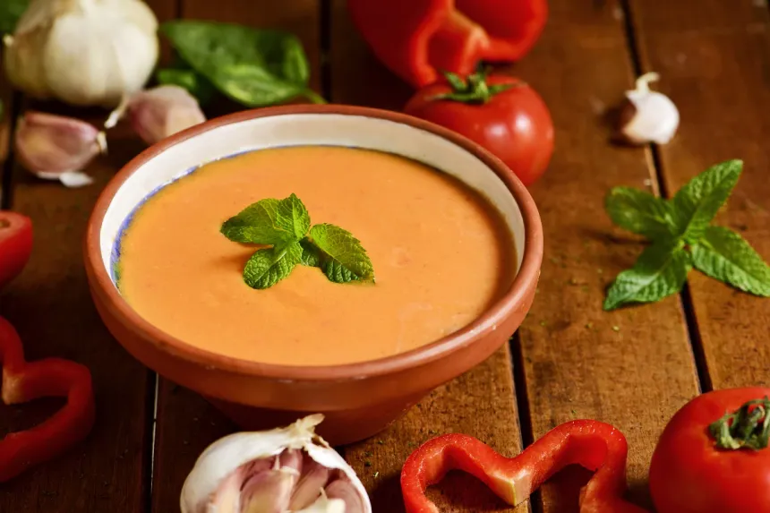

Gazpacho andaluz
Una sopa fría tradicional española, elaborada con tomates frescos, pimientos y pepino, perfecta para refrescarse en los días calurosos.

Ingredientes
Principal
- Tomates maduros
- Cebolla
- Pimiento verde
- Ajo
- Pepino
- Aceite de oliva
- Vinagre de Jerez
- Sal
- Pan
Preparación
- Trocea los tomates, cebolla, pimiento, ajo y pepino.
- Mete los ingredientes en una batidora, añade el pan, aceite de oliva, vinagre y sal.
- Bate hasta obtener una crema suave y refrigera antes de servir.
Dificultad: bajaCocina: andaluzVegetariana: síCelíacos: síAnticáncer: no
✔🍳🌱
Autor:Anónimo